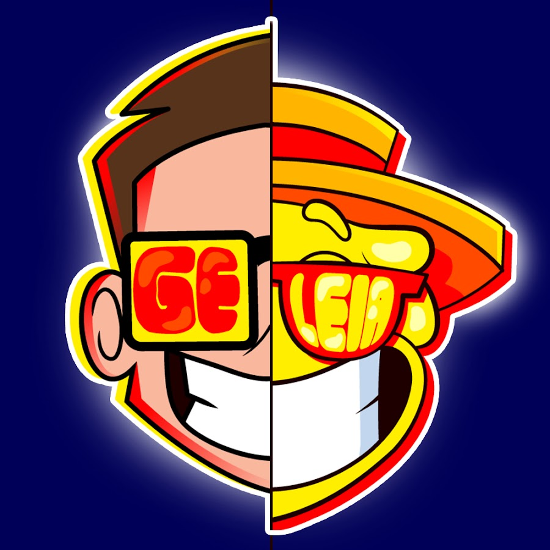
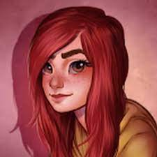

Oie! Eu sou a Maria, e vou apresentar para vocês
algumas dicas para Jogar Minecraft
Dica 1:
O jogo tem como base o cubo
Dica 2
Para começar a jogar pegue madeira,
refine e faça suas ferramentas
Dica 3:
Tente procurar ovelha para obter lã e fazer camas
Dica 4:
Mate Animais para conseguir comida
Dica 5:
O minecraft não tem regras, por tanto
divirta-se como quiser!
Oie! vou mostrar para vocês curiosidades sobre o minecraft
Número 1:
Em 25 de fevereiro de 2014 , o Minecraft atingiu 100 milhões de usuários registrados.
Até maio de 2019, mais de 180 milhões de cópias foram vendidas em todas as plataformas,
tornando-se o jogo mais vendido de todos os tempos. A versão gratuita de Minecraft China
tinha mais de 300 milhões de jogadores até novembro de 2019.
Número 2
Herobrine persegue o jogador e ainda consegue atacá-lo.
Novamente, de acordo com quem jura que o viu durante o jogo.
Outros dizem, ainda, que uma forma secundária que Herobrine
costuma aparecer é como uma espécie de construtor fantasma.
Número 3
O que significa Minecraft em português? O nome "Minecraft"
vem da emoção de dois verbos em inglês: "Mine", que significa
minerar, e Craft", que significa criar algo artesanalmente. Os
dois pontos são os grandes pilares sobre os quais Minecraft se ergueu

Canais de mintecraft que recomendo
Geleia

Lokolow
Cherry
